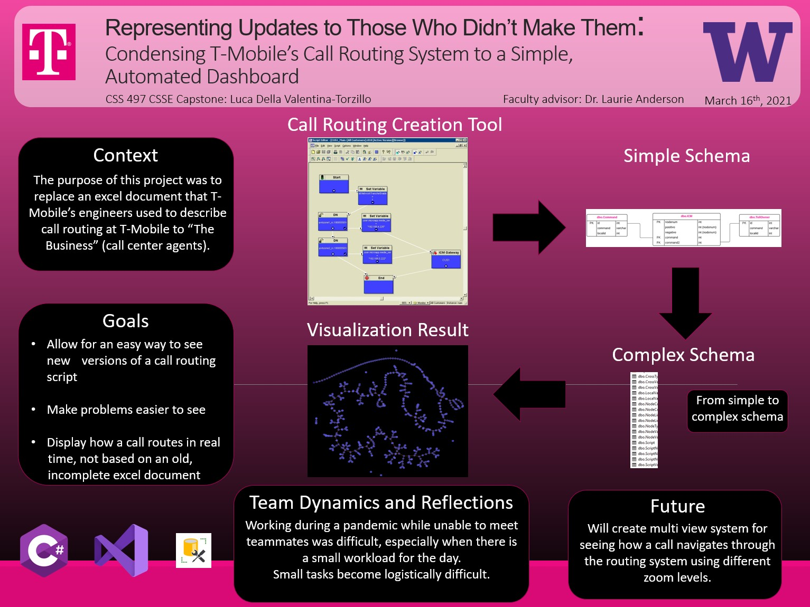

Division of Computing & Software Systems
March 19, 2021
Luca Della Valentina
Condensing T-Mobile's Call Routing System to a Simple, Automated Dashboard
T-Mobile
Advisor: Dr. Laurie Anderson
Abstract

View full-sized poster